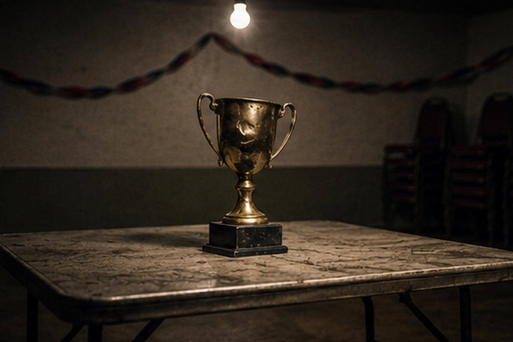
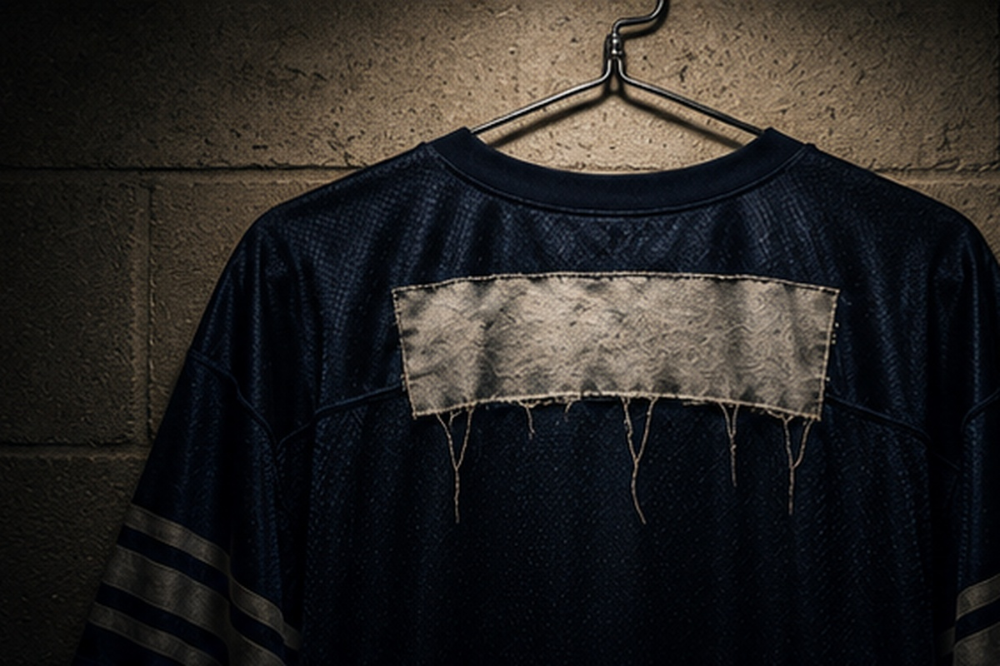
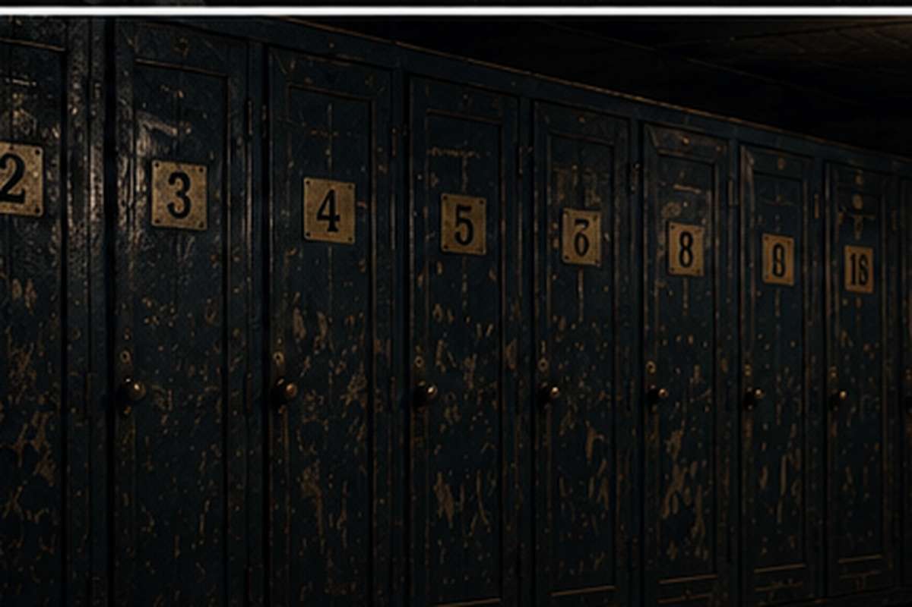
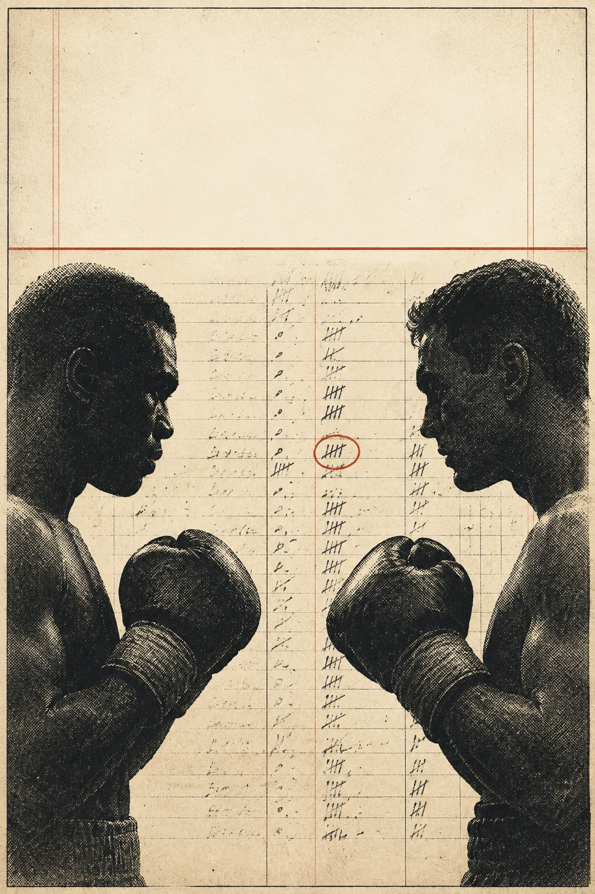

The 2026 Kickoff Issue

Here is the 2025 season in one line. The Powers of Pain finished 7-7. He scored 1,183 points, fewer than any other team that made the playoffs and fewer than four teams that missed. He is the champion.
None of that is a scandal, and none of it is an accident. It is the format doing exactly what the format was built to do, and it is worth understanding before anybody sets a lineup this year.
Eight teams qualify: the four division winners, plus two wild cards from each conference. Win your division and you are in, and you are seeded above every wild card no matter what the record says. The Powers of Pain came out of the Spectre Syndicate at 7-7, from a division where the Guido Haters also finished 7-7 and Still The Cream finished 2-12. Somebody had to come out of it.
What the format rewards is not being the best team in the league across fourteen weeks. It is being the best team in three particular ones.
He was. That is the whole point of a postseason, and anyone who wants to be sour about it should look at the 2024 champion, the Killer Klowns, who won the whole thing at 6-8.
Two things, and they pull in opposite directions.
The first is that a division title is worth more in this league than in almost any comparable format. It is not a tiebreaker or a banner — it is a seed, and the seed is the whole tournament. Four of the sixteen teams in this league will get in on a technicality this year. Do not spend December scoreboard-watching for a wild card if you can simply win four games in your own division.
The second is that the Powers of Pain has to do it again from a harder position. He is no longer the surprise. He has the trophy, he has the target, and he is in a division with the Guido Haters, who matched his record last year, and a Still The Cream side that just drew the best draft grade in the league.
This is a franchise that knows how to be there. In the eighteen seasons this desk holds records for, the Powers of Pain has reached four title games and won three of them — the best conversion rate of any manager who has been to more than one. The Machines has eleven finals in the same span and four belts. Across the full life of the league, though, the honours run level three ways: the Powers of Pain, The Machines and Big Blue have four championships each, and nobody has a fifth.
He does not get there often. He wins when he does.

The oldest rule in this league is also the only punishment in it that outlives the season. Finish last and you are renamed for the following year, and the league votes on what you get called.
The 2025 race for it came down to two teams and did not resolve until the points were counted.
The Heavy Hitters finished 2-12. Still The Cream finished 2-12. Level on the only number that usually matters, the question went to points scored, and it was not close: the Hitters put up 821, the Cream 1,028.
That 821 is the number to sit with. The next-worst total in the league was 1,003 — the Smoke Dragons, who at least had five wins to show for it. The Heavy Hitters were 182 points adrift of fifteenth place. Across a fourteen-game season that is thirteen points a week, every week, of daylight between them and the second-worst offence in the SCFL.
So the name change is theirs.
The Hitters did not have a bad draft. The Powers of Pain graded their 2026 class a B+, tied for the fifth-best mark on a board of fourteen — level with the Machines, and ahead of the Express, the Gumbas and the Collars.
The cruel part is who they finished level with. Still The Cream also went 2-12 — and drew an A+, the best grade POP handed out all summer. Two teams tied at the bottom, one walks away with the best draft class in the league and his name intact, and the other takes the rename with a perfectly respectable haul.
That is the rule working as designed. It is not meant to be fair. It is meant to be memorable.
The league votes. History says the vote is not kind and the name is not chosen to flatter — the SCFL has been doing this for the better part of twenty years, and the archive is full of franchises who spent a season answering to something they would not repeat in front of their children.
The consolation, such as it is, arrives in the spring: last place takes the 1.01. As The Machines once put it, getting the number one pick helps a little.
It has helped before. It is not helping the Heavy Hitters get their name back.
Sort last season’s sixteen teams by points scored and stop at three. The Pork Chop Express, 1,531. Big Blue, 1,490. The Beaver Eaters, 1,466.
All three are in Black and Blue. They play each other twice a year.
Six games a season are divisional, which means a Black and Blue team spends nearly half its schedule against the best-scoring group in the league. The Express and Big Blue both finished 11-3, the two best records in the SCFL, and they did it while beating each other up.
The Beaver Eaters are the exhibit. They scored the third-most points in the league — more than the eventual champion by 283 — and finished 7-7. On any other schedule that is a comfortable playoff team. In Black and Blue it was ninth in the final table and no playoff berth at all.
Wookie Leaks also went 7-7 in there, which in the circumstances is a good deal better than it looks, and he has drawn an A for his 2026 draft. So has Big Blue.
Which is the genuinely alarming part for the rest of the league. The division that already had the three best offences just added two of the three best draft classes.
Only one of these four wins the division, and the seed that comes with it. The other three are fighting for two Cobra Kai wild cards against a Four Horsemen field that includes Horse Collars at 10-4 and the New World Order at 9-5.
Somebody very good is going to miss the playoffs out of this division. Possibly two somebodies.
It is also the division with the most recent history of settling things properly. Big Blue and the Beaver Eaters have met six times in the postseason — second only to Big Blue and The Machines — and the Beavers have taken four of the six despite trailing the all-time series 10-15.
That is the shape of Black and Blue. Enormous scoring, no room, and a postseason record of the bigger name losing.
The waiver wire opens on August 25 and clears on the 26th, which is where it was always going to open before anybody moved anything. It took a month-long constitutional standoff, a disputed flash poll, a formal vote, an abandoned FAAB experiment and one correction that cost the man who made it his own argument to arrive back at the date the league already had.
It began with two words. Mid-column on his draft grades, the Powers of Pain noticed a transaction and asked the Horse Collars whether he was really cutting Carson Beck already. The reply was “Umm. Waiver wire.” A cut player has to land somewhere, and after a draft moved up to July 24 — weeks ahead of the league’s traditional window — nobody had decided where, or when anyone was allowed to pick him up. The league office froze the wire that afternoon.
The open-the-wire side held that the wire is the counterbalance to an early draft, and that holding rosters static for a month would produce, in effect, a second draft in late August. The traditionalists held that the fix for one broken date is not to break a second one. Underneath the mechanics sat a procedural objection the Smoke Dragons made repeatedly and, in the end, decisively: that a change this size does not belong in a chat poll at all. “We vote at the draft. That’s how we handle these things.”
Then the case fell apart, and it was pulled apart by the man arguing for it. The Machines, who had authored the daily-waivers plan and voted to open the wire, went back through the calendar and found the premise was wrong. Waivers had never been scheduled for September 2. On a normal year — draft on August 23 — they would have run on August 26. The gap the whole freeze was built to solve was three weeks, not five.
He posted the correction himself, against his own side, and explained why: “We don’t want to be accused of voter fraud by presenting incorrect information down the line.” Then he reissued the poll with the true dates on it. It is the single most creditable thing anybody did in the whole affair, and it decided the vote.
August 8. The Pork Chop Express opened the floor at ten to six in the morning — “Vote Day! I will put the vote up on this chat. Please just vote.” — and asked that argument be taken to the other chat so the poll would not get buried. It got buried anyway.
The corrected ballot gave two options: open the wire that week, on August 13, or open it when it would have opened normally, on August 26. The count finished 9-6 for waiting. By late morning it was already out of reach. “It’s over. Already 8 votes for no,” the Express announced, and asked the New World Order to set waivers for the 26th.
For a vote that changed nothing, it was contested like a swing state. The Beaver Eaters, watching the poll stay open, offered the only genuinely new proposal of the day: “Since the poll is still open my vote can be bought.” The Hairy Gumbas suggested the count was closer than it looked and that “the machines official voting machine or mail in ballot was hacked,” which was at least thematically consistent, and The Machines himself conceded that “I guess you really can’t trust the voting machines” before announcing he was checking out because it was his anniversary.
The Smoke Dragons, who had spent two weeks arguing that the process was the problem, collected on it in one line: “If only someone could have foreseen the chaos of having half ass votes whenever anyone wants to change something.”
The Machines, on the losing side of a vote he had corrected the ballot for, took it better than anyone had a right to expect. “It’s the power of democracy,” he wrote. “I respect the ruling and the vote.” He also spent the following week asking anybody who would listen when the waivers actually were, which is its own kind of commentary.
The Horse Collars have not reconciled. A week after the vote he was still making the case, and it is a decent one: “Exactly why I am against the delay. Diminishes the ability to look at the draft and then efficiently utilize waivers and FA to both make calculated risks and fill out the roster.”
The FAAB experiment. The Powers of Pain had floated a hundred dollars a team to bid with until the season started, the biggest structural reform anybody proposed all summer, and it never reached a ballot. The Pork Chop Express killed it in eight words — “I’m against installing a FAAB. Changes everything” — and nobody picked it back up.
On August 19, with the argument eleven days cold, the New World Order asked whether there was an official date yet and then answered his own question: “So waivers open on the 25th then and clear on the 26th.” That is four days from now.
So the league moved its draft a month early, froze the wire for a fortnight, held a vote, and put waivers back exactly where the calendar had them. The one thing that did change is harder to see on a schedule: the next time somebody wants to move a fixture, they now know what it costs, and they know the Smoke Dragons were right about where it has to be decided.

Sixteen teams, two conferences, four divisions. Six of your fourteen games are against the three teams you are about to read alongside, which means the division you are in is the single biggest fact about your season — bigger than your draft, bigger than your roster, and entirely outside your control. Win it and you are seeded above every wild card in your conference no matter what anybody’s record says. Here is all sixteen, in the order they finished.
Two divisions, four places: the two division winners, and two wild cards for whoever is left.
One franchise has finished top eight in every season on record, and the other three are playing for the one wild card he does not take. 225 points separate top from bottom.
Went 7-7 on 1,331 points and finished sixth, which undersells the most interesting fact about them. They hold a 6-3 record against The Machines — the only winning series anyone has against him — and across those nine games the cumulative points difference is four. Not four a game. Four in total. The Powers of Pain gave the draft a B- for a single running back, which is either discipline or a quiet year, and the Chops have been quiet before.
Went 9-5 on 1,417 points and finished seventh. None of which is the story. The story is 192-47 across the eighteen seasons on record, four championships, eleven title games, and a top-eight finish in every single year the records hold — no other franchise has more than twelve. He beats Still The Cream 30-4. He beats the Killer Klowns 26-1. Exactly one team in this league has a winning record against him, and they are sitting directly above him in this division. The one crack: seventh place two years running, and no belt since 2018. A B+ draft says he is not planning to make that three.
Went 7-7 on 1,298 points and finished tenth, a year after three straight seasons inside the top six. There is a championship on the shelf and six top-eight finishes in fourteen seasons here, so the floor is real. He did not appear on the Powers of Pain’s board this summer, which in a league that grades everything is its own kind of statement.
Won the championship in 2024 and finished fourteenth in 2025 at 3-11. Defending champions have gone over the side before — twice to fifteenth — so the fall is not unheard of, only steep. 1,192 points is the least in the division, and the franchise carries a 1-26 record against The Machines that is not a typo. The reason to watch anyway: the Powers of Pain graded this draft A-, the fourth-best mark on the board, and a team that has already proved it can win the whole thing does not need to be good for long.
The champion lives here, and so does the worst points total of any division winner’s neighbourhood. Nobody in it scored 1,300. 272 points separate top from bottom.
The champion. 7-7, 1,183 points — fewer than any other team that made the bracket — and the belt. Read the four years before it in order: fifteenth, eleventh, tenth, tenth, and then first. There are three titles here in the seasons on record and four title games, so this is a franchise that knows the walk. The thing standing in the way of a repeat is not the Machines and it is not the Express. It is the Hairy Gumbas, who hold a 18-6 record over him across 24 games and are not in his division, which is the only mercy in it.
Went 7-7 on 1,275 points and finished fourth, the most points in the division and nothing much to show for it. The last five finishes read thirteenth, third, thirteenth, thirteenth, fourth, which is not a trend, it is a coin. The long story here is the quietest series in the league: 45 games against the Powers of Pain, sitting 21-24, two divisional rivals who have almost never said a word about it. A B draft. He is closer than the finishes suggest.
Went 5-9 on 1,003 points and finished thirteenth — the fewest points in the division and the second fewest in the league. In eighteen seasons on record there are no championships and, harder to look at, no title games. Not lost — reached. The Machines have him 3-18. The C+ draft leaned on a receiver and a developmental quarterback, which is a plan that needs two years, and the Dragons have had plenty of those.
Finished sixteenth at 2-12 on 1,028 points, and then watched the rename go to somebody else on the tiebreak. 97-142 across eighteen seasons with no titles and no finals is the hardest line in this preview. So is 4-30 against The Machines. And yet: the Powers of Pain handed this draft an A+, the best grade given to anybody all summer. Last place has the first pick and the best class in the league. If it does not turn now, it does not turn.
Two divisions, four places: the two division winners, and two wild cards for whoever is left.
Three of the four highest-scoring teams in the league, in one division, playing each other twice. Somebody very good misses the playoffs out of this. 252 points separate top from bottom.
Scored 1,531 points, more than anyone in this league, went 11-3, and lost the final. Finished second. That is a season most managers would take and nobody wants to repeat. The worry is the summer: a C+ class described as depth rather than difference, in a division where the other three all scored 1,466 or better. Being the best offence in the league did not settle 2025 and it will not settle this one either.
Went 11-3 on 1,490 points and finished fifth. The résumé is four championships, level with anyone who has ever played here, and inside the eighteen seasons on record three title games and three wins — the only unbeaten record in the building — off 144-95 overall. The last two years read fourth and fifth, which for this franchise counts as a slump. He drew an A for the draft and holds Wookie Leaks 19-6. The reason to be careful about writing him off: he has reached three finals and never lost one.
Here is the cruellest line in the preview. 144-95 across eighteen seasons — identical, win for win and loss for loss, to Big Blue’s — and no championships in those seasons to Big Blue’s four. In 2025 he scored 1,466 points, third most in the league, went 7-7, and finished ninth: outside the bracket entirely. Then the Powers of Pain graded the draft a D, the only one on the board, and called two of the three picks baffling. Historically one of the best drafters in this league. Not this year.
Went 7-7 on 1,279 points and finished eleventh, the fewest points in a division where everybody else cleared 1,460. Big Blue has him 6-19 across 25 games and The Machines 3-17, so the schedule is not doing him any favours. The summer was the good news: an A draft built on a receiver who fell further than he should have, and two swings at a thin running back class. If the receiver stays healthy this is a different team. If.
The widest division in the league, and the one carrying the rename. 537 points separate top from bottom.
Went 10-4 on 1,343 points and finished third, up from eleventh and twelfth the two years before it. There is a championship here and ten top-eight finishes in eighteen seasons, so the jump is a return rather than a surprise. The summer is the argument against: a C-, second worst on the board, for a draft the Powers of Pain described as laying up. His longest series is 41 games against the New World Order, sitting 18-23, and he sees them twice a year.
Went 9-5 on 1,358 points and finished eighth, the most points in the division. This is the most consistently dangerous franchise nobody calls dangerous: four title games, twelve top-eight finishes in eighteen seasons, and finishes of fifth, second, third and second before last year’s eighth. The B draft took two first-round receivers and left the roster lopsided, which the Powers of Pain flagged and the standings may not care about.
Went 8-6 on 1,221 points and finished twelfth, and the record does something strange with this franchise. He has four top-eight finishes in eighteen seasons, the fewest of anyone here, and no championships from two title games. And yet he owns the reigning champion 18-6 across 24 games. The C draft took a quarterback who needs three years behind a starter, on a roster whose best players do not have three years. That tension is the whole season.
Finished fifteenth at 2-12 on 821 points — 182 behind the next-lowest team in the league, a margin that is difficult to look at. The rename is his. What the standings do not say: there is a championship on this shelf, and a 16-10 record over the Jet-I across 26 games. The Powers of Pain gave the draft a B+, fifth best on the board, built around the one back everybody agreed was elite. New name, first pick, best class in the division. Worse hands have been dealt.
The highest-scoring team of 2025 was Pork Chop Express on 1531; the lowest was Heavy Hitters on 821. That is a gap of 710 points between the top and the bottom of this league, which is roughly a touchdown and a half every week for a whole season. The team at the top of it lost the final. The team at the bottom of it is getting a new name.
Every pick below comes off the same three things: what a team scored last season, what the Powers of Pain made of its draft, and what the franchise has done when it got to January before. Records are the worst of the three — this league just watched a 7-7 team win the whole thing — so points carry more weight here than wins do.
Four division winners, four wild cards, two conference champions, one belt. Here is the desk’s call on all of it, and the reasoning underneath, so it can be held against us in January.
Two divisions, two wild cards, and one of these four teams reaches the final.
The Machines. Went 9-5 on 1,417 points, the most in the division, off the only top-eight finish in every season the records hold. The Chops own him head to head and it has never once cost him a season. A B+ class on top of the deepest roster in the league. This is the safest of the four calls.
Guido Haters. Taking the division off the reigning champion, which needs saying out loud. The Powers of Pain won the title on 1,183 points — fewer than any team in the bracket — while the Haters posted 1,275 on the identical 7-7 record. Same wins, ninety-two more points, and a B draft against a champion who does not grade himself. The title was real. The scoring underneath it was not.
Powers of Pain and Lil’ Chops. The champion as a wild card is not an insult, it is arithmetic: 1,183 points does not win a division containing a team that scored ninety-two more. He gets in anyway, because three titles from four title games is a manager who knows the three weeks that count. The Chops take the second on 1,331 points and a series lead over the team picked to win the conference.
Two divisions, two wild cards, and one of these four teams reaches the final.
Big Blue. The hardest division to call and the one most likely to embarrass this desk. The Express scored 1,531 to Big Blue’s 1,490 off the same 11-3 record. The separator is the summer: an A class against a C+, and a franchise that has been to three title games and lost none of them. The Beaver Eaters scored 1,466 and missed the bracket from here last year, which tells you what this division does to good teams.
New World Order. Horse Collars won it at 10-4 and are not being picked to repeat it, because they scored fewer points than the team behind them and then drafted C-, second worst on the board. The New World Order put up 1,358, the most in the division, took a B class, and have twelve top-eight finishes in eighteen seasons. Last year’s eighth was the outlier, not the level.
Pork Chop Express and Horse Collars. The Express miss the division and are still the highest-scoring team in this league at 1,531. That is the Black and Blue tax. Horse Collars take the last place on 10-4 and a division title already banked, which leaves the Beaver Eaters at 1,466 points on the outside again.
The Machines. Nobody in this conference has his record and nobody is close. 192-47 across eighteen seasons, eleven title games, and a bracket that has never once been played without him. Getting to the final is the thing he does.
Big Blue. Through the Express, who beat him to the points title and lost the game that mattered, and through a New World Order side that has reached four finals and won one. Big Blue is three-for-three in title games. The road to one is the part he has to prove again.
Big Blue. So: Big Blue over The Machines, and this desk is aware of how that sounds after picking the Machines to walk his conference.
Here is the whole argument, and it is not the trophy count — across the full life of this league the Machines, Big Blue and the Powers of Pain all have four championships and nobody has a fifth. It is what happens once they get there. In the eighteen seasons on record the Machines have played eleven title games and won four: 4-7 on the last Sunday. Big Blue has played three and won three. 3-0.
That is a small sample and this desk knows it. Seven losses across eighteen years is not a flaw in a manager, it is what happens to anyone who keeps arriving, and it is the reason he has as many belts as anyone. But a pick has to come down on one side of something, and the only place these two separate is the week the season ends.
Four things, in order of likelihood. Still The Cream drew an A+, the best class anybody got, and finished sixteenth: if that draft lands, the Spectre Syndicate pick is wrong twice over. The Killer Klowns took an A- and have already won a title inside the last two years. The Hairy Gumbas hold the reigning champion 18-6 and nobody has picked them for anything. And the Beaver Eaters scored 1,466 points last season, more than three of the four teams picked to win divisions, and are picked for nothing at all.

This league has always described itself in grudges. Ask any manager who his rival is and you will get an answer in under a second, delivered with total confidence and no evidence whatsoever.
So the Newsroom went and counted. Every matchup in the league’s records — eighteen seasons, twenty-one franchises, 2,344 games — reconciled against the standings until the two agreed exactly. Then we counted something else: who actually talks to whom, and how often it stops being friendly.
The results do not flatter everybody, and one of the things they did was demolish a couple of the stories this desk was ready to print.
A rivalry needs three things, and this desk scored all three. You have to play each other a lot. The series has to be close enough to be worth arguing about. And you have to actually engage — measured as back-and-forth in the chat, normalised so the quiet managers aren’t punished for being quiet and the loud ones don’t win on volume.
Two facts about how this league is built had to be respected, and ignoring either one produces nonsense. The first is the schedule. Sixteen teams, two conferences, two divisions of four. You play your own division twice — six games — the other division in your conference once, and four more scattered across the other conference to fill the card. Which means the size of a head-to-head sample is mostly a fact about the schedule rather than about the two men involved: share a division for a decade and you will pile up thirty games without either of you choosing it. Shared history here is counted in seasons spent in the same division, not in raw games.
The second is the postseason. Eight teams qualify — the four division winners plus two wild cards from each conference — and then all sixteen keep playing for three more weeks, the bottom half in a consolation ladder that decides nothing. The records flag every one of those as a playoff game. They are not. A playoff meeting in this report means both teams qualified. That is twelve games a season, not twenty-four, and sorting it properly is what killed two of the rivalries this desk was ready to print.
Note also what is deliberately absent. We counted how often exchanges turn sharp, because that says something about a pairing. We are not printing what was said. This league has been friends for thirty years, and the worst thing anyone typed at eleven o’clock on a Sunday night is not evidence of anything except a bad week.
Start with the finding that reorganises everything else. The Machines does not have a rivalry with most of this league. He has victims.
Against the Killer Klowns he is 26-1. Against Still The Creamiest, 30-4. Against the Smoke Dragons, 18-3. Against the Hairy Gumbas, 17-3. Against Wookie Leaks, 17-3. Against the Beaver Eaters, 10-2.
That is six franchises and 134 games at a combined 118-16, with a points margin north of four thousand. The loudest arguments in this league are not between equals — they are the sound of six men losing to the same person for the better part of two decades.
It holds up in the postseason too, where it counts. He has met the Smoke Dragons five times in the playoffs and won all five.
And to be clear about what that adds up to, because the standings deserve the credit: The Machines has won four championships, a total matched by the Powers of Pain and by Big Blue and beaten by nobody. What separates him is the arriving. He has played in eleven of the eighteen title games in the records this desk holds, which is not a statistic about luck. It means that in more than half the seasons we can account for, he was the last or second-to-last man standing.
He has lost seven of those eleven. That is the line people reach for, and it is worth being careful with. A man who reaches the final eleven times is going to lose finals; the seven managers who beat him were each having the best season of their lives, and a fantasy final is one week of scoring in which the better team loses all the time. The Machines has as many belts as anyone and more finals than anyone by a distance of seven. Those are the facts in the right order.
Which brings us to the one pairing that has everything, and it is not close.
The Machines and Big Blue have met seven times in the playoffs — more than any other pair of franchises in league history — and Big Blue has won four of the seven. The regular-season series belongs to The Machines at 16-13 across twenty-nine games, which is exactly the shape a real rivalry should have: one man edges the long haul, the other takes the games that matter.
In 2023 Big Blue beat him in the final, 125.5 to 100. It was the middle jewel of a three-peat — 2021, 2022, 2023 — and it makes Big Blue three-for-three in title games, the only perfect record in the building. He has also won the last five meetings between them outright.
One man is 118-16 against six franchises. Against the seventh he is 3-4 when it counts. That is a rivalry, and it is the only one he has.
If you want the pairing that behaves most like a rivalry is supposed to, it is the Pork Chop Express and the Smoke Dragons.
The series is 9-7 across sixteen games, a margin of 154 points over nine seasons — close enough that either man can claim it depending on the day. What separates it is the engagement: 21.6% of all the back-and-forth these two have in the chat is with each other.
Only one pairing engages more, and it proves the point rather than spoiling it. The Machines and the Smoke Dragons run at 23.4% — the highest mutual figure in the SCFL — and that series is 18-3. Men talk most at the person beating them. Set aside the pairings where somebody is simply losing, and the Express and the Dragons are the most engaged evenly-matched teams in the building, by a distance.
The longest series in league history belongs to two men nobody thinks of as rivals at all: the Powers of Pain and the Guido Haters have played forty-five times, splitting them 24-21, with four postseason meetings on top. And it is not an accident — they have been divisional rivals in sixteen of their eighteen seasons together, which is the longest continuous division pairing in the league. Two men scheduled against each other twice a year for the better part of two decades, and almost nothing said about any of it.
Close behind: the New World Order and Horse Collars, 41 games and sixteen shared divisional seasons; the New World Order and the Beaver Eaters, 37 games and a series standing at 19-18 — one game apart after seventeen seasons together, five of their meetings in the playoffs. And Horse Collars and the Beaver Eaters, 35 games, thirteen of them divisional years, 19-16 to the Beavers.
These are the old marriages of the SCFL. Enormous shared history, almost no heat, and a scoreline that refuses to separate.
One franchise has quietly made a habit of ending Big Blue’s Januarys. The Beaver Eaters have met him six times in the playoffs — second only to The Machines–Big Blue file — and have taken four of the six, despite trailing the overall series 10-15.
That is the postseason inverting a regular-season order, which is the rarest thing in these records and the only honest version of a giant-killing in the league.
Two rivalries this desk fully expected to write did not survive the counting, and they are worth reporting as corrections rather than quietly dropping.
The Heavy Hitters and Still The Creamiest look, at first glance, like the great unspoken feud: twenty-seven games and a series sitting at 14-13. Sort the postseason properly and they have met four times, and split them 2-2. The Hairy Gumbas and the Heavy Hitters, who appeared to have a postseason stranglehold, have never met in a playoff game at all. Every one of those meetings was in the consolation bracket, which is to say none of them were playing for anything.
There is a lesson in that for everybody who tells rivalry stories, this desk very much included. Half the grudges in a fantasy league are two teams who kept running into each other in week fifteen while both seasons were already over.
Two pairings deserve mention precisely because nobody argues about them.
The Jet-I and the Smoke Dragons have played twenty-nine times and the series sits at 15-14. Dead level across a decade and a half, and it has never once become a talking point.
And the tightest series in the entire dataset, by the only measure that cannot be argued with: Lamb Chops versus The Machines. Nine games, and a cumulative points difference of four. Not four a game — four in total, with Lamb Chops holding a 6-3 edge. The newest manager in the league and the most decorated, separated by a rounding error, and neither of them has ever mentioned it.
Two playoff games in league history have been decided by half a point: the Killer Klowns over the Jet-I in 2024, and Big Blue over the Pork Chop Express in 2018. Somewhere in each of those weeks a man set a lineup on a Sunday morning and never learned how close it came.
The league’s own account of itself turns out to be about half right.
The rivalries people talk about loudest are mostly real, and the Express and the Dragons are exactly as advertised. The best of them all is The Machines and Big Blue, which has the games, the stakes, the title and the current streak. But the most remarkable series in the book — forty-five games between the Powers of Pain and the Guido Haters — belongs to two men who have never made a noise about it, and two of the feuds this desk believed in turned out to be consolation football.